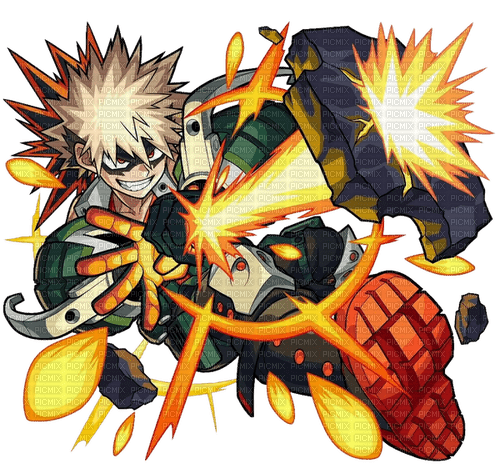

Katsuki Bakugo
Nome de Herói: Great Explosion Murder God Dynamight
Individualidade: Explosion – Seu suor nas palmas das mãos é composto por algo similar à nitroglicerina, permitindo que ele crie explosões massivas e use o impulso para voar.
Perfil:
Explosivo, orgulhoso e extremamente competitivo. Embora pareça um vilão pelo temperamento agressivo, tem uma determinação inabalável para se tornar o herói número um absoluto.